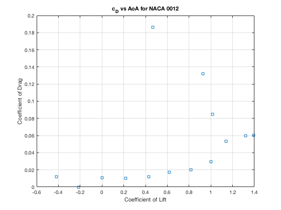
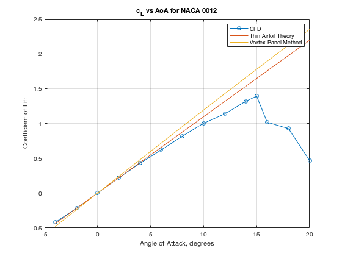

ASEN 3111 - CFD Lab - Main
Turbulent Flow over a NACA 0012 airfoil
Author: Margaux McFarland
Collaborators: Brendan Palmer
Date: 12/10/19
clc
clear all
close all
load Data_CFD_McFarland_Margaux.mat
for i = 1:length(results)
if i < 13
CD(i + 2) = results(i).forceCoeff(end);
elseif i == 13
CD(i - 12) = results(i).forceCoeff(end);
elseif i == 14
CD(i - 13) = results(i).forceCoeff(end);
elseif i < 27
CL(i - 12) = results(i).forceCoeff(end);
elseif i == 27
CL(i - 25) = results(i).forceCoeff(end);
elseif i == 28
CL(i - 27) = results(i).forceCoeff(end);
end
end
AoA = -4:2:20;
AoA = [AoA(1:10) 15 AoA(11:end)];
figure(1)
plot(CL,CD,'s');
title('c_{D} vs AoA for NACA 0012');
xlabel('Coefficient of Lift');
ylabel('Coefficient of Drag');
grid on
figure(2)
plot(AoA,CL, '-o');
title('c_{L} vs AoA for NACA 0012');
xlabel('Angle of Attack, degrees');
ylabel('Coefficient of Lift');
hold on
grid on
stall_angle = 15;
lift_slope = (CL(find(AoA == 10, 1)) - CL(1))/(10 - AoA(1));
zero_lift_AoA = AoA(find(abs(CL) == min(abs(CL)),1));
max_cl = max(CL);
AoA = -4:2:20;
lift_slope_thin = deg2rad(2*pi);
zeroAoA_thin = 0;
cl_thin = lift_slope_thin.*(AoA-deg2rad(zeroAoA_thin));
plot(AoA, cl_thin);
hold on
load Cl_different_AOA_0012.mat
plot(AoA,Cl_different_AOA_0012);
legend('CFD','Thin Airfoil Theory','Vortex-Panel Method');
 